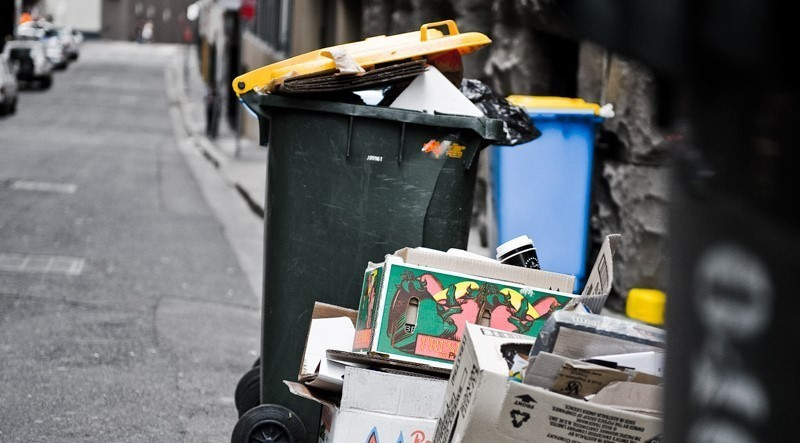

Learn about the Waste in the Kaipara
Waste. Learn about the Waste to Energy
project.

Kaipara Waste
Waste to Energy
A project called waste-to-energy is being considered by the Kaipara district council. This project is an alternative way of disposing of waste, instead of filling a landfill with waste they would burn it. According to the founder Jacqui Forbes, who owns an environmental company states that implementing this project would have worse outcomes than a landfill. Although burning rubbish reduces the amount of waste, it becomes more toxic when it's burnt.
Plans for a new rubbish dump were being discussed in the Kaipara; this was planned to be placed on a forest block in the dome valley. This new rubbish dump would provide a risk to the marine environment in the Kaipara harbor alongside a bad smell. A lot of people protested regarding the location of the landfill. A piece of land sold to the government near the south side of Wellsford is going to be the location of this waste to energy project. The price of this land has been suppressed by the government and isn't planned to be released to the public. This project will be the replacement of the current Redvale facility servicing the Kaipara which is expected to reach capacity as early as 2026. The waste management is going to undertake 350 trucks transporting rubbish from Auckland to the landfill everyday meaning there is a high risk of Kaipara Harbour getting polluted. This new land fill raises risks to the Hoteo river which flows into the Kaipara harbor where there are already sediment issues.
Waste Pollution in the Kaipara
Rubbish pollution in the Kaipara appears to be an issue as well as in the whole of New Zealand. In 2022/2023 a gross tonnage of 4,410,597 with only 88.9% of the waste being disposed of. In New Zealand only 28% of recyclable rubbish is recycled compared to other companies such as Germany and Australia having a 50% recycle rate. These higher rates are the result of more effective recycling programs and public awareness campaigns, suggesting that New Zealand has considerable room for improvement. Recently, New Zealand has been taking action to reduce these issues, such as introducing stricter regulations on plastic use and enhancing the infrastructure for waste processing and recycling. Additionally, there is growing advocacy for a shift towards a circular economy, where products are designed with their end-of-life disposal in mind, and materials are continually recycled and reused. We think that this is a step in the right direction for New Zealand, which will have a huge impact in the Kaipara if it proves to be effective.

References
-
“It's much worse” - opposition to landfill alternative in Kaipara District. (2023, May 25). Te Ao Māori News.
teaonews.co.nz/2023/05/25/its-much-worse-opposition-to-landfill-alternative-in-kaipara-district/ -
Waste facilities and disposal. (2024, April 9). Ministry for the Environment.
environment.govt.nz/facts-and-science/waste/waste-facilities-and-disposal/ -
Ali, I. (2020, September 21). Concerns over Waste Management's massive dump polluting Kaipara Harbour. NZ Herald.
nzherald.co.nz/northern-advocate/news/concerns-over-waste-managements-massive-dump-polluting-kaipara-harbour/